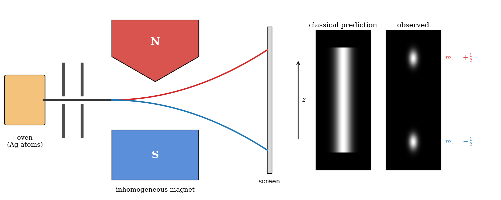
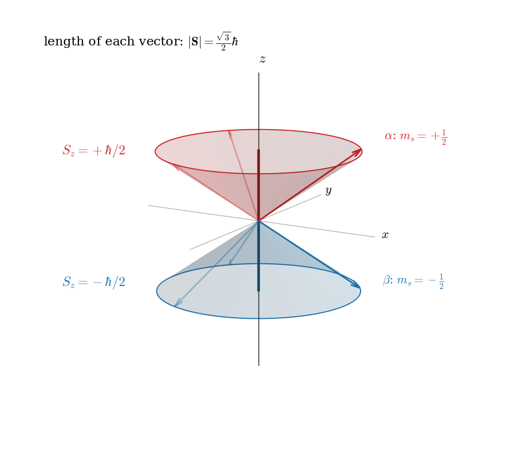
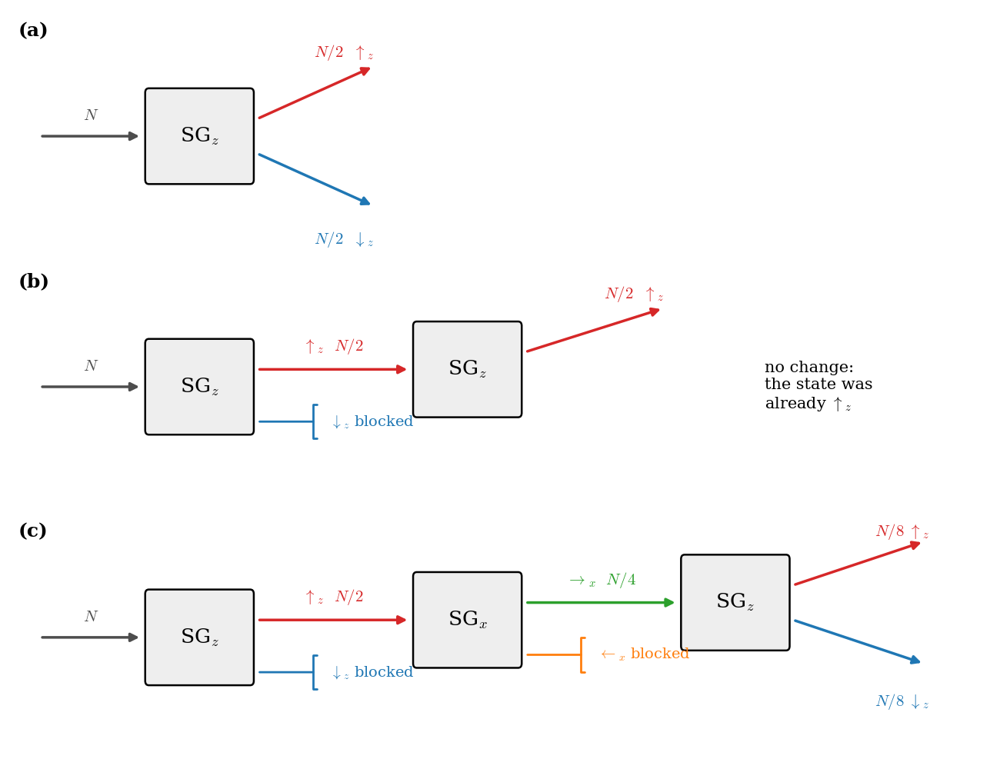
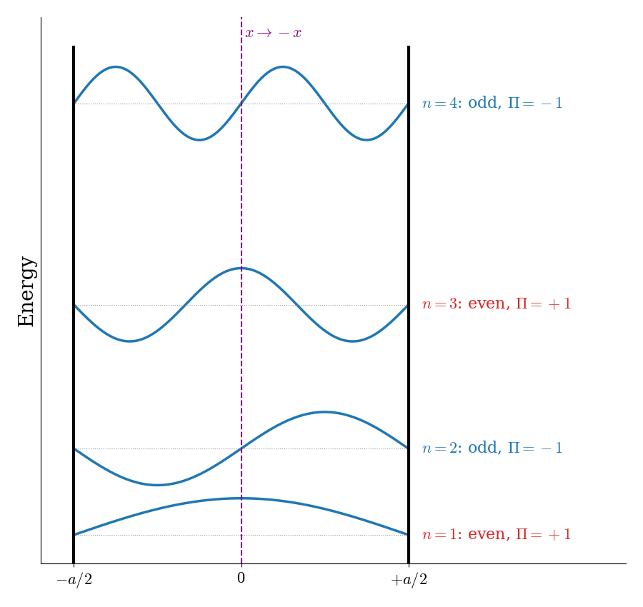

7 Spin
Spin is a special property of particles that has no classical analogue. Spin is an intrinsic form of angular momentum carried by elementary particles, such as the electron.
7.1 Stern-Gerlach Experiment
In 1922, Otto Stern and Walter Gerlach performed an experiment that unintentionally led to the discovery that electrons have their own intrinsic angular momentum (spin), independent of their orbital motion in an atom. The experiment was done by putting a silver foil in an oven to vaporize its atoms. The silver atoms were collected into a beam that passed through an inhomogeneous magnetic field. The result was that the magnetic field split the beam into two (and only two) separate ones. The Stern–Gerlach experiment demonstrated that the spatial orientation of angular momentum is quantized into two components (up and down). Thus an atomic-scale system was shown to have intrinsically quantum properties. The experiment is normally conducted using electrically neutral particles such as silver atoms. This avoids the large deflection in the path of a charged particle moving through a magnetic field and allows spin-dependent effects to dominate. A schematic of the apparatus is shown in figure 7.1.

If the particle is treated as a classical spinning magnetic dipole, it will precess in a magnetic field because of the torque that the magnetic field exerts on the dipole. If it moves through a homogeneous magnetic field, the forces exerted on opposite ends of the dipole cancel each other out and the trajectory of the particle is unaffected. However, if the magnetic field is inhomogeneous then the force on one end of the dipole will be slightly greater than the opposing force on the other end, so that there is a net force which deflects the particle’s trajectory. If the particles were classical spinning objects, one would expect the distribution of their spin angular momentum vectors to be random and continuous. Each particle would be deflected by an amount proportional to its magnetic moment, producing some density distribution on the detector screen. Instead, the particles passing through the Stern–Gerlach apparatus are equally distributed among two possible values, with half of them ending up at an upper spot (“spin up”), and the other half at the lower spot (“spin down”). Since the particles are deflected by a magnetic field, spin is a magnetic property that is associated with some intrinsic form of angular momentum. As we saw in chapter 6, the quantization of the angular momentum gives energy levels that are \((2\ell+1)\)-fold degenerate. Since along the direction of the magnet we observe only two possible eigenvalues for the spin, we conclude the following value for \(s\):
\[ 2s+1=2 \quad\Rightarrow\quad s=\frac{1}{2}. \tag{7.1}\]
The Stern-Gerlach experiment proves that electrons are spin-\(\frac{1}{2}\) particles. These have only two possible spin angular momentum values measured along any axis, \(+\frac {\hbar }{2}\) or \(-\frac {\hbar }{2}\), a purely quantum mechanical phenomenon. Because its value is always the same, it is regarded as an intrinsic property of electrons, and is sometimes known as “intrinsic angular momentum” (to distinguish it from orbital angular momentum, which can vary and depends on the presence of other particles).
The act of observing (measuring) the spin angular momentum along the \(z\) direction corresponds to the operator \(\hat{S}_z\), which projects the value of the total spin operator \(\hat{S}^2\) along the \(z\) axis. The eigenvalue equation for this projection operator is:
\[ \hat{S}_z \chi = \hbar m_s \chi, \tag{7.2}\]
where \(m_s=\left\{-s,+s\right\}=\left\{-\frac{1}{2},+\frac{1}{2}\right\}\) is the spin quantum number along the \(z\) component. The eigenvalues for the total spin operator \(\hat{S}^2\)—similarly to the angular momentum operator \(\hat{L}^2\) seen in eq. 6.31—are:
\[ \hat{S}^2 \chi = \hbar^2 s(s+1) \chi, \tag{7.3}\]
Notice that the magnitude of the spin angular momentum, \(|\mathbf{S}|=\hbar\sqrt{s(s+1)}=\frac{\sqrt{3}}{2}\hbar\approx0.87\hbar\), is larger than its largest possible projection on the \(z\) axis, \(\frac{1}{2}\hbar\). In other words, the spin vector can never point exactly along \(z\). A common way of picturing this result, shown in figure 7.2, is to imagine the spin vector lying somewhere on the surface of a cone around the \(z\) axis: its \(z\) component is well defined (\(+\frac{\hbar}{2}\) for \(\alpha\), and \(-\frac{\hbar}{2}\) for \(\beta\)), while its \(x\) and \(y\) components are not. As we will see in the next sections, this is a consequence of the fact that the three components of spin cannot be measured at the same time.

The initial state of the particles in the Stern-Gerlach experiment is given by the following wave function:
\[ \chi = c_1\, \alpha + c_2 \,\beta, \tag{7.4}\]
where \(\alpha\) and \(\beta\) are the two eigenfunctions of \(\hat{S}_z\), corresponding to spin up (\(\uparrow\), \(m_s=+\frac{1}{2}\), eigenvalue \(+\frac{\hbar}{2}\)) and spin down (\(\downarrow\), \(m_s=-\frac{1}{2}\), eigenvalue \(-\frac{\hbar}{2}\)), respectively, and the coefficients \(c_1\) and \(c_2\) are complex numbers. The names \(\alpha\) and \(\beta\) for the two spin functions are standard in chemistry, and we will use them for the rest of this textbook. In this initial state, spin can point in any direction. The expectation value of the operator \(\hat{S}_z\) (the quantity that the Stern-Gerlach experiment measures), can be obtained using eq. 6.22:
\[ \begin{aligned} <S_z> &= \int \chi^{*} \hat{S}_z \chi \, d\mathbf{s} \\ &= +\frac{\hbar}{2} \vert c_1\vert^2 -\frac{\hbar}{2} \vert c_2\vert^2, \end{aligned} \tag{7.5}\]
where the integration is performed along a special coordinate \(\mathbf{s}\) composed of only two values. Applying the normalization condition, eq. 6.20, we can obtain:
\[ |c_{1}|^{2}+|c_{2}|^{2}=1 \quad\longrightarrow\quad |c_{1}|^{2}=|c_{2}|^{2}=\frac{1}{2}. \tag{7.6}\]
This equation is not sufficient to determine the values of the coefficients since they are complex numbers. Eq. 7.6, however, tells us that the squared magnitudes of the coefficients can be interpreted as probabilities of outcome from the experiment. This is true because their values are obtained from the normalization condition, and the normalization condition guarantees that the system is observed with probability equal to one. Summarizing, since we started with random initial directions, each of the two states, \(\alpha\) and \(\beta\), will be observed with equal probability of \(\frac{1}{2}\).
7.2 Sequential Stern-Gerlach Experiments
An interesting result can be obtained if we link multiple Stern–Gerlach apparatuses into one experiment and we perform the measurement along two orthogonal directions in space. As we showed in the previous section, all particles leaving the first Stern-Gerlach apparatus are in an eigenstate of the \(\hat{S}_z\) operator (i.e., their spin is either “up” or “down” with respect to the \(z\)-direction). We can then take either one of the two resulting beams (for simplicity let’s take the “spin up” output), and perform another spin measurement on it. If the second measurement is also aligned along the \(z\)-direction then only one outcome will be measured, since all particles are already in the “spin up” eigenstate of \(\hat{S}_z\). In other words, the measurement of a particle being in an eigenstate of the corresponding operator leaves the state unchanged. The possible combinations of sequential experiments discussed in this section are summarized in figure 7.3.

If, however, we perform the spin measurement along a direction perpendicular to the original \(z\)-axis (i.e., the \(x\)-axis) then the output will equally distribute among “spin up” or ”spin down” in the \(x\)-direction, which in order to avoid confusion, we can call “spin left” and “spin right”. Thus, even though we knew the state of the particles beforehand, in this case the measurement resulted in a random spin flip in either of the measurement directions. Mathematically, this property is expressed by the nonvanishing of the commutator of the spin operators:
\[ \left[\hat{S}_z,\hat{S}_x \right] \neq 0. \tag{7.7}\]
We can finally repeat the measurement a third time, with the magnet aligned along the original \(z\)-direction. According to classical physics, after the second apparatus, we would expect to have one beam with characteristic “spin up” and “spin left”, and another with characteristic “spin up” and “spin right”. The outcome of the third measurement along the original \(z\)-axis should be one output with characteristic “spin up”, regardless of which beam the magnet is applied (since the “spin down” component should have been “filtered out” by the first experiment, and the “spin left” and “spin right” component should be filtered out by the third magnet). This is not what is observed. The output of the third measurement is—once again—two beams in the \(z\) direction, one with “spin up” characteristic and the other with “spin down”.
This experiment shows that spin is not a classical property. The Stern-Gerlach apparatus does not behave as a simple filter, selecting beams with one specific pre-determined characteristic. The second measurement along the \(x\) axis destroys the previous determination of the angular momentum in the \(z\) direction. This means that this property cannot be measured on two perpendicular directions at the same time.
7.3 Spin Operators
The mathematics of quantum mechanics tells us that \(\hat{S}_z\) and \(\hat{S}_x\) do not commute. As we saw in section 6.3.3, when two operators do not commute, in general there is no state in which both of the associated quantities have a definite value: they cannot be known at the same time.
In 3-dimensional space there are three directions that are orthogonal to each other \(\left\{x,y,z\right\}\). Thus, we can define a third spin projection operator along the \(y\) direction, \(\hat{S}_y\), corresponding to a new set of Stern-Gerlach experiments where the second magnet is oriented along a direction that is orthogonal to the two that we considered in the previous section. The total spin operator, \(\hat{S}^2\), can then be constructed similarly to the total angular momentum operator of eq. 6.29, as:
\[ \begin{aligned} \hat{S}^2 &=\hat{S}\cdot\hat{S}=\left(\mathbf{i}\hat{S}_x+\mathbf{j}\hat{S}_y+\mathbf{k}\hat{S}_z\right)\cdot\left(\mathbf{i}\hat{S}_x+\mathbf{j}\hat{S}_y+\mathbf{k}\hat{S}_z \right) \\ &=\hat{S}_x^2+\hat{S}_y^2+\hat{S}_z^2, \end{aligned} \tag{7.8}\]
with \(\left\{\mathbf{i},\mathbf{j},\mathbf{k}\right\}\) the unit vectors in three-dimensional space.
Wolfgang Pauli explicitly derived the relationships between all three spin projection operators. Assuming the magnetic field along the \(z\) axis, Pauli’s relations can be written using simple equations involving the two possible eigenstates \(\alpha\) and \(\beta\):
\[ \begin{aligned} \hat{S}_x \alpha = \frac{\hbar}{2} \beta \qquad \hat{S}_y \alpha &= \frac{\hbar}{2} i \beta \qquad \hat{S}_z \alpha = \frac{\hbar}{2} \alpha \\ \hat{S}_x \beta = \frac{\hbar}{2} \alpha \qquad \hat{S}_y \beta &= - \frac{\hbar}{2} i \alpha \qquad \hat{S}_z \beta = -\frac{\hbar}{2} \beta, \end{aligned} \tag{7.9}\]
where \(i\) is the imaginary unit (\(i^2=-1\)). In other words, for \(\hat{S}_z\) we have eigenvalue equations, while the remaining components have the effect of permuting state \(\alpha\) with state \(\beta\) after multiplication by suitable constants. We can use these equations, together with eq. 6.7, to calculate the commutator for each pair of spin projection operators:
\[ \begin{aligned} \left[\hat{S}_x, \hat{S}_y\right] &= i\hbar\hat{S}_z \\ \left[\hat{S}_y, \hat{S}_z\right] &= i\hbar\hat{S}_x \\ \left[\hat{S}_z, \hat{S}_x\right] &= i\hbar\hat{S}_y, \end{aligned} \tag{7.10}\]
which prove that the three projection operators do not commute with each other.
Example 7.1 Proof of Commutator Between Spin Projection Operators.
The equations in eq. 7.10 can be proved by writing the full eigenvalue equation and solving it using the definition of commutator, eq. 6.7, in conjunction with Pauli’s relations, eq. 7.9. For example, for the first pair:
\[ \begin{aligned} \left[\hat{S}_x, \hat{S}_y\right] \alpha &= \hat{S}_x\hat{S}_y\alpha-\hat{S}_y\hat{S}_x\alpha \\ &= \hat{S}_x \left(\frac{\hbar}{2}i \beta \right)-\hat{S}_y \left(\frac{\hbar}{2} \beta \right) \\ &= \frac{\hbar}{2}i \left(\frac{\hbar}{2} \alpha \right)- \frac{\hbar}{2} \left(-\frac{\hbar}{2}i \alpha \right) \\ &= \left(\frac{\hbar^2}{4}+\frac{\hbar^2}{4}\right)i\alpha \\ &= \frac{\hbar^2}{2}i \alpha \\ &= i\hbar\hat{S}_z \alpha \end{aligned} \tag{7.11}\]
7.4 Operators Commuting with the Hamiltonian
To conclude this chapter, it is helpful to step back and see how symmetries and commuting operators give rise to the quantum numbers used to label states, and how spin becomes essential, especially in real atoms. In every system, the operators that commute with the Hamiltonian tell us which physical quantities are conserved and which labels (quantum numbers) are “good.”
7.4.1 Free particle: translational symmetry and momentum
For a one‑dimensional free particle, the Hamiltonian is
\[ \hat{H} = \frac{\hat{p}^2}{2m}. \tag{7.12}\]
Space is translationally invariant: shifting the particle by any distance does not change the physics. Mathematically, this symmetry implies that the Hamiltonian commutes with the momentum operator:
\[ [\hat{H}, \hat{p}] = 0. \tag{7.13}\]
Because of this commutation, and the theorem that we discussed in section 6.3.3, energy eigenfunctions can be chosen to be momentum eigenfunctions as well, and momentum (or equivalently the wavevector \(k\)) is a good quantum number that labels the states.
7.4.2 Particle in a box: broken translation, introduction to parity
In a particle‑in‑a‑box of length \(a\), with infinite potential walls at \(x = 0\) and \(x = a\), the Hamiltonian inside the box still looks like a free particle, but the boundary conditions
\[ \psi(0) = 0, \qquad \psi(a) = 0, \tag{7.14}\]
break translational symmetry: shifting the entire system by any finite amount would move the walls and change the problem. As a result, the momentum operator no longer commutes with the Hamiltonian, and
\[ [\hat{H}, \hat{p}] \neq 0. \tag{7.15}\]
Momentum is not conserved and is not a good quantum number.
However, there is still an important discrete symmetry if we choose our coordinates carefully. Consider a symmetric box extending from \(-a/2\) to \(+a/2\). In that case, the system is invariant under inversion of the coordinate, \(x \longrightarrow -x.\)
This operation is described by the parity operator \(\hat{\Pi}\), which acts on a wavefunction as
\[ \hat{\Pi}\psi(x) = \psi(-x). \tag{7.16}\]
If the potential is symmetric, \(V(x) = V(-x)\), then the Hamiltonian is unchanged by this inversion and commutes with the parity operator:
\[ [\hat{H}, \hat{\Pi}] = 0. \tag{7.17}\]
This means that energy eigenfunctions can be chosen to be eigenfunctions of parity as well. Those with
\[ \hat{\Pi}\psi(x) = +\psi(x) \tag{7.18}\]
are called even functions (symmetric, \(\psi(-x) = \psi(x)\)), and those with
\[ \hat{\Pi}\psi(x) = -\psi(x) \tag{7.19}\]
are odd functions (antisymmetric, \(\psi(-x) = -\psi(x)\)). Thus, even though continuous translational symmetry (and conserved momentum) is lost, a discrete symmetry remains, and the corresponding quantity—parity—serves as a useful label for the states. This is a simple example of how a commuting operator encodes a symmetry and yields a quantum “label,” in this case even/odd parity. The parity of the first four states of the particle in a box is shown in figure 7.4: the states alternate between even and odd as the energy increases.

7.4.3 Particle on a ring and on a sphere: rotational symmetry
Rotational symmetry plays a similar but richer role. For a particle on a ring (motion confined to a circle of radius \(r\)), the system is invariant under rotations in the plane. The relevant operator is the \(z\)‑component of orbital angular momentum, \(\hat{L}_z\). Rotational invariance around the \(z\)‑axis implies
\[ [\hat{H}, \hat{L}_z] = 0, \tag{7.20}\]
so \(\hat{L}_z\) and \(\hat{H}\) share a set of eigenfunctions. These eigenfunctions have the form \(\mathrm{e}^{\mathrm{i} m_{\ell} \phi}\), where \(\phi\) is the angular coordinate, and \(m_{\ell}\) is an integer. The integer \(m_\ell = 0, \pm 1, \pm 2, \dots\) is a good quantum number: it labels both the allowed angular momenta and the energy levels, which are proportional to \(m_\ell^2\).
For a particle on a sphere, there is full three‑dimensional rotational symmetry. The Hamiltonian commutes with both the total orbital angular momentum operator \(\hat{L}^2\) and with \(\hat{L}_z\):
\[ [\hat{H}, \hat{L}^2] = 0, \qquad [\hat{H}, \hat{L}_z] = 0. \tag{7.21}\]
The simultaneous eigenfunctions of \(\hat{L}^2\) and \(\hat{L}_z\) are the spherical harmonics \(Y_\ell^{m_\ell}(\theta,\phi)\). Their quantum numbers arise directly from these commuting operators:
- \(\ell = 0,1,2,\dots\quad\) from \(\quad \hat{L}^2Y_\ell^{m_\ell} = \hbar^2 \ell(\ell+1)Y_\ell^{m_\ell}\),
- \(m_\ell = -\ell, -\ell+1, \dots, +\ell\quad\) from \(\quad\hat{L}_zY_\ell^{m_\ell} = \hbar m_\ell Y_\ell^{m_\ell}\).
For each \(\ell\), there are \(2\ell+1\) states with different \(m_\ell\) but the same energy, a degeneracy that is a direct consequence of rotational symmetry.
7.4.4 Hydrogen atom: Coulomb symmetry
The hydrogen atom is a central example where these ideas connect directly to the familiar quantum numbers \(n\), \(\ell\), and \(m_\ell\). In the nonrelativistic approximation, the Hamiltonian depends only on the distance \(r\) from the nucleus. This spherical symmetry implies that
\[ [\hat{H}, \hat{L}^2] = 0, \qquad [\hat{H}, \hat{L}_z] = 0. \tag{7.22}\]
Solving the Schrödinger equation in spherical coordinates leads to energy eigenfunctions that are products of a radial function (depending on \(n\) and \(\ell\)) and an angular function, the spherical harmonic \(Y_\ell^{m_\ell}(\theta,\phi)\). The commuting set \(\hat{H}\), \(\hat{L}^2\), and \(\hat{L}_z\) gives rise to the labels \((n, \ell, m_\ell)\), and the large degeneracy of hydrogenic levels reflects both rotational symmetry and a deeper Coulomb symmetry.
7.4.5 Spin and many‑electron atoms: why spin matters
So far, all these operators act on the spatial part of the electron’s wave function. However, as we introduced in this chapter, the electron also has an intrinsic angular momentum, spin, described by spin operators \(\hat{S}^2\) and \(\hat{S}_z\). For the simple nonrelativistic hydrogen Hamiltonian (which does not explicitly include spin), these operators commute with \(\hat{H}\):
\[ [\hat{H}, \hat{S}^2] = 0, \qquad [\hat{H}, \hat{S}_z] = 0. \tag{7.23}\]
This means that each spatial state labeled by \((n, \ell, m_\ell)\) can be combined with two spin states, with spin quantum numbers \(s = 1/2\) and \(m_s = \pm 1/2\), doubling the degeneracy. In this simplest picture, spin does not change the energy levels, but it enlarges the set of possible states and will matter whenever magnetic fields or spin‑dependent interactions are present.
In many‑electron atoms, spin is even more central. The Coulomb Hamiltonian still respects overall rotational symmetry, so one can define a total orbital angular momentum \(\mathbf{L}\) by adding the orbital angular momenta of all electrons, and a total spin \(\mathbf{S}\) by adding all individual spins. In a good approximation (LS‑coupling regime), the Hamiltonian commutes with the corresponding operators \(\hat{L}^2\) and \(\hat{S}^2\), and the quantum numbers \(L\) and \(S\) become important labels for atomic states. At the same time, the Pauli exclusion principle demands that the total electronic wave function be antisymmetric under exchange of any two electrons, tightly linking the allowed combinations of spatial quantum numbers (generalizing \(n, \ell, m_\ell\)) with the allowed spin states. In this way, the operators that commute with the Hamiltonian—momentum, parity, orbital angular momentum, and spin—not only reveal the underlying symmetries of each model system, but, in real atoms, highlight how indispensable spin is in determining the structure, degeneracies, and selection rules of atomic spectra.
7.5 Chapter Review
7.5.1 Study Questions
1. The Stern–Gerlach experiment with silver atoms showed that the beam splits into what?
- a continuous smear of intensities
- three discrete spots (\(m_s = -1, 0, +1\))
- a single undivided spot
- two and only two discrete spots on the detector
- four discrete spots
2. What key quantum property is demonstrated by the observed splitting in the Stern–Gerlach experiment?
- continuous distribution of angular momentum orientations
- quantization of spin angular momentum along the field direction
- conservation of classical orbits
- absence of magnetic moments in atoms
- violation of energy conservation
3. For an electron (a spin‑½ particle), what are the possible measured values of the spin component \(s_z\)?
- \(0, \pm \hbar\)
- \(\pm \hbar\)
- Only \(+\hbar/2\)
- Any real multiple of \(\hbar\)
- \(+\hbar/2\) or \(-\hbar/2\)
4. In a Stern–Gerlach experiment measuring \(s_z\), a general spin state can be written as:
- A classical vector of length \(\hbar/2\)
- A single eigenstate of \(\hat{s}_z\) only
- \(c_1\,\alpha + c_2\,\beta\) with complex \(c_1, c_2\)
- A mixture of infinitely many \(s_z\) eigenvalues
- A real linear combination of position eigenstates
5. After a beam passes through a Stern–Gerlach apparatus aligned along \(z\) and only the “spin up” channel is allowed through, what is the spin state of the particles that pass through?
- An equal superposition of up and down
- Eigenstate \(\beta\) (spin down) of \(\hat{s}_z\)
- Eigenstate \(\alpha\) (spin up) of \(\hat{s}_z\)
- A classical mixture of all directions
- An eigenstate of \(\hat{s}_x\)
6. If a second Stern–Gerlach apparatus is placed after the first and is also aligned along the same \(z\) direction, what happens to a beam that is already in the spin-up state \(\alpha\)?
- It is entirely transmitted as \(\alpha\) with no further splitting
- It becomes completely unpolarized
- It splits again into up and down beams
- It is entirely absorbed
- It flips to \(\beta\)
7. In a sequential Stern–Gerlach experiment, a \(z\)-up beam is sent into a second apparatus aligned along \(x\). What is observed at the second apparatus?
- Only one output beam (“spin left”)
- Two beams with equal intensities: “spin left” and “spin right” along \(x\)
- Only one output beam (“spin right”)
- A continuous spread in deflection angles
- No beam at all
8. Mathematically, the non‑classical nature of sequential Stern–Gerlach experiments is expressed by which property of spin operators such as \(\hat{s}_z\) and \(\hat{s}_x\)?
- They commute: \([\hat{s}_z,\hat{s}_x] = 0\)
- They have identical eigenvalues
- They are proportional to the identity
- They do not commute: \([\hat{s}_z,\hat{s}_x] \neq 0\)
- They vanish when squared
9. In three dimensions, the spin components are generally associated with which three operators?
- \(\hat{s}_r, \hat{s}_y, \hat{s}_z\)
- \(\hat{s}_x, \hat{s}_y, \hat{s}_z\)
- \(\hat{s}_+, \hat{s}_-, \hat{s}_z\)
- \(\hat{s}_1, \hat{s}_2, \hat{s}_3\) with all commuting
- \(\hat{s}_x, \hat{s}_z, \hat{s}_t\)
10. What key lesson about spin is emphasized by the Stern–Gerlach experiments?
- Spin is a small classical correction to orbital motion
- Spin has a direct classical analogue in rotating spheres
- Spin is a purely quantum property with no classical analogue
- Spin is irrelevant for chemistry
- Spin is always conserved and cannot change under measurement